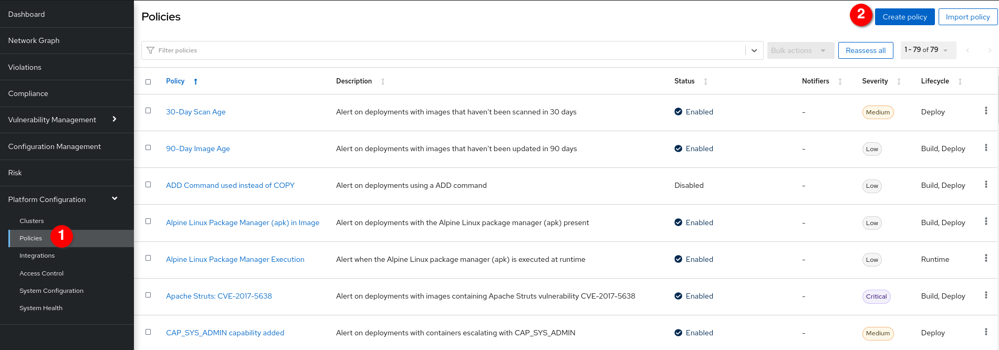
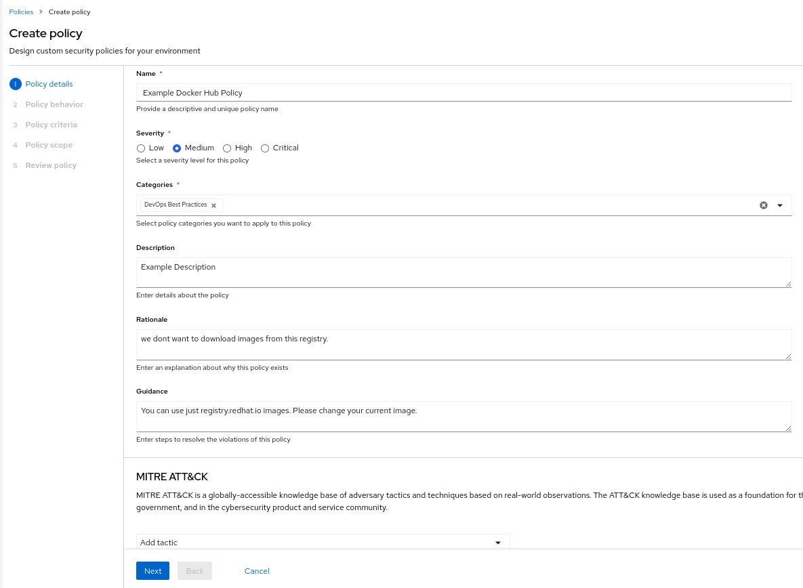
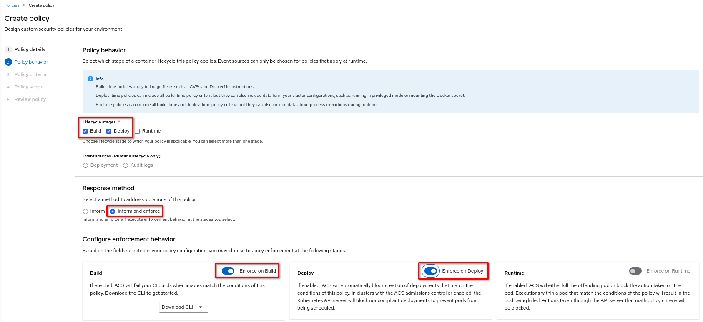
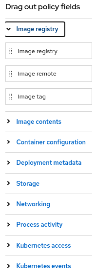
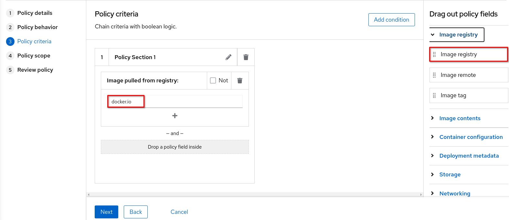
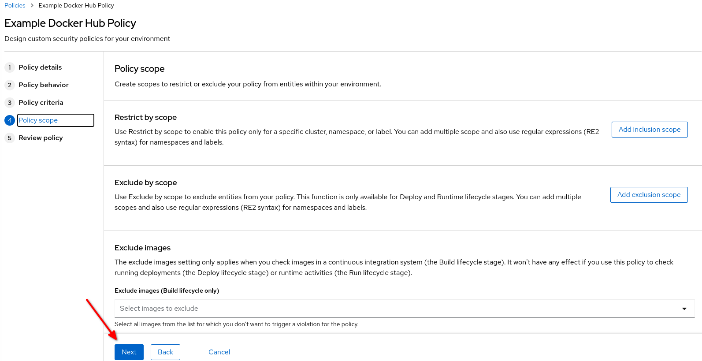
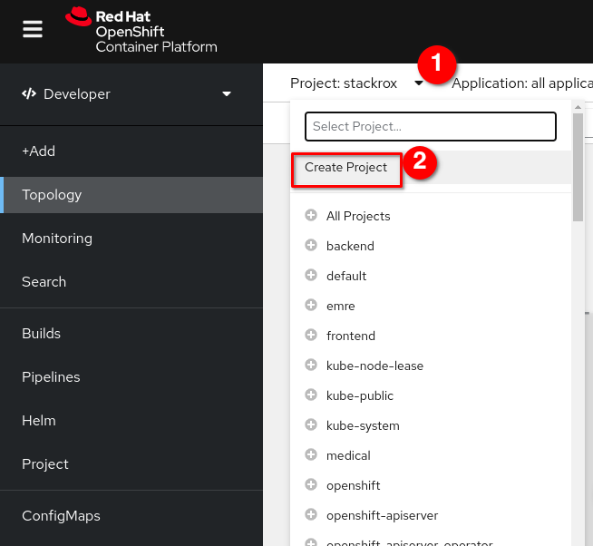
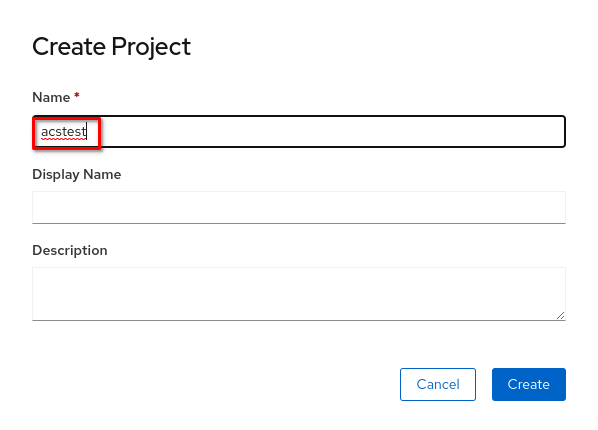
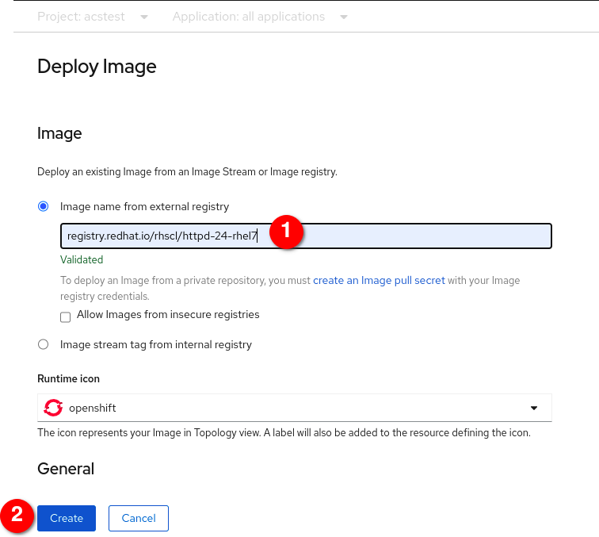
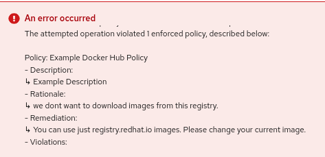

System Policies in RHACS
System Policies Overview
Red Hat Advanced Cluster Security for Kubernetes allows you to use out-of-the-box security policies and define custom multi-factor policies for your container environment.
Configuring these policies enables you to automatically prevent high-risk service deployments in your environment and respond to runtime security incidents.

All of the policies that ship with the product are designed with the goal of providing targeted remediation that improves security hardening.
You’ll see this list contains many Build and Deploy time policies to catch misconfigurations early in the pipeline, but also Runtime policies that point back to specific hardening recommendations.
These policies come from us at Red Hat - our expertise, our interpretation of industry best practice, and our interpretation of common compliance standards, but you can modify them or create your own.
System Policies Build and Deploy Example
-
Click on the Red Hat Package Manager in Image Policy to view policy details.
-
You can use the filter.


This is what an ACS policy looks like - front and center you can see the Rationale and Remediation designed to give the DevOps team some context about why this issue is important for security, and more importantly, what to do about the issue.
You might get the impression that we don’t like Package Managers!
While useful, in a container context they just represent a tool that an attacker can use to install software, and don’t have a legitimate use - a container should ship with all of the dependencies it requires.

Policy criteria can cross the build, deploy, and runtime lifecycles.
For example, policies that highlight vulnerabilities in deployments with privileged containers in that deployment.
Another example might runtime criteria - like execution of shell commands - in containers in deployments that have external network exposure.
It’s easy to write a policy that prevents use of compilers and other build tools - except in development clusters, in namespaces for CI/CD tools.
There are no “silos” - other tools require you to manage policies for vulnerabilities and runtime separately.
The unified policy engine allows for targeted conditions and targeted enforcement, easily allowing exceptions for specific applications once approved by security.
System Policies Enforcement
-
Click on the Fixable Severity at least important policy in the list. (It’s usually 20-30 rows down. You can also filter for it by typing “fixable” in the filters bar.
As you’ve seen - ACS focuses on empowering and encouraging developers to understand and resolve security issues in their own deployments.
Sometimes we have to balance the carrot with a little stick, because security officers need to know that dangerous misconfigurations won’t be promoted and deployed in certain environments, and that’s where enforcement of policy comes in.
-
Click Actions and Edit in the upper right of the policy
-
Click Next to see Policy behaviour
Enforcement is another demonstration of Kubernetes-native security, leveraging the pipeline process to prevent unacceptable risks.
In the absence of CI/CD integration, or for images that are promoted without going through CI/CD, we leverage the built-in power of a Kubernetes Admission Controller to decide if a deployment can be created.
We’re essentially programming OpenShift to prevent security risk Security gets their enforcement, and DevOps sees a “normal” failure from the OpenShift API, with clear remediation steps instead of a nebulous error that forces them to go open a ticket or look in another console.
-
Click enable for both Build and Deploy enforcement. You can save this policy. But we dont need to save this policy now. We will create policy with enforcement later. Click
Canceland exit editing policy page.
Create new Policy
You can create new security policies from the system policies view.
-
On the RHACS portal, navigate to Platform Configuration → Policies.
-
Click Create policy
 -
Enter the following details about your policy in the Policy details section:
-
Enter an example Name for the policy.
Example Docker Hub PolicyWe will create an example policy for Docker Hub Registry because we dont want to download images from this registry. -
Select a Severity level for this policy, either Critical, High, Medium, or Low. You can select
Medium -
Select policy Categories you want to apply to this policy. Select
Devops Best Practices -
Enter details about the policy in the Description box.
-
Enter an explanation about why the policy exists in the Rationale box.
we dont want to download images from this registry. -
Enter steps to resolve violations of this policy in the Guidance box.Developer can see this message. For example
You can use just registry.redhat.io images. Please change your current image. -
Optional: Under the MITRE ATT&CK section, select the tactics and the techniques you want to specify for the policy.You can add tactics and techniques for this policy.

-
-
Click
Next -
In the Policy behavior section, select the Lifecycle stages and Event sources (Runtime lifecycle only) for the policy.
-
Choose Lifecycle Stages to which your policy is applicable, from Build, Deploy, or Runtime. We will select
Build and Deployfor this example. You can select more than one stage.-
Build-time policies apply to image fields such as CVEs and Dockerfile instructions.
-
Deploy-time policies can include all build-time policy criteria but they can also include data from your cluster configurations, such as running in privileged mode or mounting the Docker socket.
-
Runtime policies can include all build-time and deploy-time policy criteria but they can also include data about process executions during runtime.
-
-
-
For Response method, Select
Inform and enforceLet’s look differences:
-
Inform to include the violation in the violations list.
-
Inform and enforce to enforce actions.
-
Choose the enforcement behavior for the policy. It is only available for the stages you select when configuring Lifecycle Stages. Select ON (enable) to enforce policy and report a violation, and OFF (disable) to only report a violation. The enforcement behavior is different for each lifecycle stage.
-
Build- Red Hat Advanced Cluster Security for Kubernetes fails your continuous integration (CI) builds when images match the conditions of the policy. -
Deploy- Red Hat Advanced Cluster Security for Kubernetes blocks creation of deployments that match the conditions of the policy. In clusters with admission controller enforcement, the Kubernetes or OpenShift Container Platform API server blocks all noncompliant deployments. In other clusters, Red Hat Advanced Cluster Security for Kubernetes edits noncompliant deployments to prevent pods from being scheduled. -
Runtime- Red Hat Advanced Cluster Security for Kubernetes kills all pods that match the conditions of the policy or blocks the action taken on the pods.
-
-
-
-
Click
Next -
ACS comes some default policy criteria with different categories.
Image Registry,Image Contentsetc. Let’s lookup this criterias.You can drag and drop these criterias. For detailed information: https://docs.openshift.com/acs/3.69/operating/manage-security-policies.html#policy-criteria_manage-security-policies -
We will use
Image Registrycriteria at theImage Registrycategory as shown below.You can drag and drog and fill-up the box withdocker.io -
Click
Next -
In the Policy scope section,we will use default options.Hovewer you can configure the following:
-
You can click Add inclusion scope to use Restrict to Scope to enable this policy only for a specific cluster, a namespace, or a label. You can add multiple scopes and also use regular expressions in RE2 Syntax for namespaces and labels.
-
You can click Add exclusion scope to use Exclude by Scope to exclude deployments, clusters, namespaces, and labels you specify, it means that the policy will not apply to the entities that you select. You can add multiple scopes and also use regular expressions in RE2 Syntax for namespaces and labels. However, you cannot use regular expressions for selecting deployments.
-
For Excluded Images (Build Lifecycle only), select all images that you do not want to trigger a violation for.

-
-
Click
Next -
In the Review policy section, preview the policy violations at the right side.
-
Click
Save
Now let’s check the new policy. We will try to deploy application on Openshift Console.
-
Firstly, we should find our console address.

-
Login this address on your browser

-
Create Project repeat steps as shown below. We will create a new project for our tests.
 -
You can fill the name whatever you want.
 -
At this step Click
TopologyandContainer Imagetab.
-
Image Name: docker.io/mysql:latestClickCreate -
Let’s review the error.
Your enforcement works!!!